| Divyakush Punjabi | 24BCB0126 |
Students learning Operating Systems face two kinds of material. One is conceptual: why a design exists and what it costs. The other is procedural: schedules, page-replacement traces, Banker's-algorithm tables and disk-head movements, where one wrong step spoils the answer. General-purpose language models handle the first kind well. On the second they fail in a characteristic way: they state the rule correctly and then execute it wrongly. On our 57-item problem suite, every one of the fine-tuned model's 7 scheduling failures had correct arithmetic on a wrong schedule.
This report presents OS Tutor, a complete teaching system built around that observation. A 4-billion-parameter model (Qwen3-4B-Instruct-2507) was fine-tuned with QLoRA on 11,760 curated and licence-checked training rows, produced by an eleven-stage data pipeline with 19 release gates. The model explains, teaches Socratically, reads problems and writes shell commands. Each of its failure modes is guarded by a separate layer. Verified simulators compute the answers to the seven kinds of numerical problem they cover. A hybrid retrieval (RAG) layer grounds explanations in 2,970 openly licensed documents and cites them. A fact checker corrects known misconceptions. In tutor mode, a private simulator check stops any reply that would give the answer away or state a wrong one. The whole system runs on one laptop GPU.
Every claim was measured with paired, significance-tested evaluations. The system solves 57 of 57 hand-written problems, against 30 of 57 for the untuned model. On a 600-item out-of-distribution holdout it scores 99.8%. Retrieval raised short-answer accuracy from 68.1% to 86.1% (p = 0.007), with zero invented citations, and no statistically detectable forgetting of general knowledge was found (MMLU, p = 0.68). End-to-end testing found five faults: a tutor reply that revealed a wrong count, a disk-size misreading, false alarms in the fact checker, an incorrect shell command and an answered off-topic question. Each was fixed and re-measured, and Section 6 reports the results before and after.
Keywords: large language models, QLoRA, retrieval-augmented generation, intelligent tutoring systems, tool-augmented reasoning, operating systems education, evaluation methodology.
Table 0.1 Key results
| Measure | Result | Evidence |
|---|---|---|
| Hand-written OS problems solved exactly | 57/57 | Untuned base: 30/57 |
| Out-of-distribution holdout (600 problems) | 99.8% | Disk items 74/80 → 80/80 after the range fix |
| Short-answer accuracy with retrieval | 86.1% | 68.1% without; p = 0.007 |
| Invented citations in grounded answers | 0 | 69/72 answers cite a source |
| Tutor replies that keep the answer back for the student | 30/30 | 15/30 before the tutor check |
| Fact-checker precision on probes | 2/2 | 1/3 before the fix |
| Fact-checker recall on probes | 2/2 | 1/2 before the fix |
| Retrieval latency (95th percentile, CPU) | 9.2–21.2 ms | Budget 500 ms |
| Decode speed on an 8 GB laptop GPU | 42.9 tok/s | Target ≥ 20 tok/s |
| Automated checks | 355 | Five suites, all passing |
Operating Systems is one of the core courses of a computer-science degree, and one of the hardest to learn from a textbook alone. The subject has two layers. The conceptual layer covers why virtual memory exists, what a context switch costs and why locks can deadlock. The procedural layer is a set of algorithms that students carry out by hand: CPU schedules and Gantt charts, page-replacement traces, Banker's-algorithm safety checks, disk-head movement, memory allocation and address translation. Examinations test both, and the procedural layer is unforgiving: one misplaced process in a Round Robin queue changes every number that follows.
One-to-one tutoring is the most effective form of instruction known. Bloom's classic study found that tutored students performed about two standard deviations above students taught conventionally [1]. One tutor per student does not scale, so large language models (LLMs) are an obvious candidate. They are fluent, always available and patient. Their risks in education are equally well documented [2]. They state falsehoods confidently, they hand over answers when a student needs to think, and the large commercial ones send student data to external services. The course brief asked for an LLM "specifically for learning and teaching Operating System concepts" and listed the tools students already use (ChatGPT, Claude, Gemini, Copilot, DeepSeek-R1, Qwen 3 and Llama 3.3). Each is useful, and each needs its answers checked.
Before deciding what to build, we measured how a capable small model fails, and the result shaped the whole project. Of the fine-tuned model's 7 failures on scheduling problems in our 57-item suite, all 7 had perfect arithmetic and a wrong schedule. The model could recite the Round Robin rule exactly. It then placed a newly arrived process behind the pre-empted one, or forgot that a process had finished, and every number that followed was wrong. Scheduling had the most training rows of any family (1,733) and still the worst accuracy (42%), so more data was not the fix.
The design principle follows directly. A small language model is reliable at reading a problem and explaining a rule, and unreliable at executing a long procedure. In OS Tutor, therefore, the model explains and the simulators compute. Every other layer applies the same idea: each known failure mode is assigned to a component that cannot make that mistake.
OS Tutor is a complete, locally hosted teaching system, not just a fine-tuned checkpoint. A student opens a chat interface (Open WebUI) and asks a question in plain English. A gateway written in Python reads the question and routes it:
The system runs on one laptop with an 8 GB GPU, no student question leaves the machine, and the stack costs nothing to run.
Table 1.1 Components of the system
| Component | What it contributes | Key figure |
|---|---|---|
Training dataset ostutor-sft v3.0.0 | Curated, decontaminated, licence-checked rows covering five behaviours | 11,760 rows; 19/19 gates |
| Fine-tuned model (QLoRA adapter v3) | Output formats, Socratic tutoring and shell commands; general ability retained | MMLU 80.25% → 79.50% (p = 0.68) |
| Verified solver (7 simulator kinds) | Exact answers for scheduling, paging, disk, Banker's safety and request, allocation and address translation | 57/57 suite; 99.8% OOD |
| Retrieval layer (hybrid RAG) | Cited passages from a course corpus (105 documents) or an open corpus (2,970 documents); says when a topic is not covered | +18.0 pp short answers; 0 invented citations |
| Gateway (router and checks) | Five teaching modes, fact checker, tutor check, shell check, off-topic refusal, request for missing inputs | 76 gateway checks; 28/28 routing |
Section 2 reviews the literature. Sections 3 and 4 state the problem and the measurable objectives. Section 5 describes the methodology. Section 6 presents the prompts, real outputs, benchmark results and the faults fixed during testing. Sections 7–9 give the conclusion, the limitations and future work.
The review covers the four questions the design had to answer:
For each question we chose the most directly applicable peer-reviewed paper and verified the reference. Each paper is summarised by its problem, method, findings and limitations, and by what OS Tutor takes from it.
P. Lewis et al., "Retrieval-Augmented Generation for Knowledge-Intensive NLP Tasks," NeurIPS 2020 [3].
Problem. Knowledge stored only in a model's parameters is hard to update, cannot be inspected, and leads to hallucination on knowledge-intensive tasks. Method. A pre-trained sequence-to-sequence generator is combined with a dense passage retriever over a Wikipedia index. The retrieved passages are treated as a latent variable, either once for the whole output (RAG-Sequence) or per token (RAG-Token). Findings. State-of-the-art results on three open-domain question-answering tasks, with generations judged more specific, diverse and factual than a parametric-only baseline. The knowledge can be updated by replacing the index. Limitations. The query encoder and the generator are fine-tuned jointly on task data, there is no mechanism to abstain when retrieval finds nothing relevant, and the reader is shown no citation. Use in OS Tutor. We condition answers on retrieved text with a frozen, fine-tuned model and no joint training. We add a calibrated abstain gate and visible [S1]-style citations, because in teaching a citation the student can check matters as much as the accuracy gain.
T. Dettmers, A. Pagnoni, A. Holtzman and L. Zettlemoyer, "QLoRA: Efficient Finetuning of Quantized LLMs," NeurIPS 2023 [4]; building on E. J. Hu et al., "LoRA," ICLR 2022 [5].
Problem. Full fine-tuning of a multi-billion-parameter model needs far more GPU memory than academic or free hardware provides. Method. LoRA freezes the pre-trained weights and trains small low-rank update matrices, with no extra inference latency once merged. QLoRA back-propagates through a frozen 4-bit base, using a 4-bit NormalFloat data type, double quantisation and paged optimisers. Findings. A 65B model can be fine-tuned on a single 48 GB GPU while preserving 16-bit fine-tuning quality; the resulting Guanaco models reach 99.3% of ChatGPT's level on the Vicuna benchmark. Limitations. The evaluation is dominated by chat quality judged by other models, and narrow procedural skill and retained general ability are not the focus. Use in OS Tutor. The training method itself: QLoRA through Unsloth with r = 32 and α = 64 on all linear layers. It made 16,384-token training of a 4B model possible on Kaggle's free Tesla T4 GPUs.
D. Biderman et al., "LoRA Learns Less and Forgets Less," Transactions on Machine Learning Research, 2024 [6].
Problem. Practitioners choose LoRA for its efficiency without knowing how it trades learning the new domain against forgetting the old, the classic problem of catastrophic forgetting [13]. Method. LoRA is compared with full fine-tuning on programming and mathematics, in instruction fine-tuning and in continued pre-training, with forgetting measured on tasks outside the target domain. Findings. In standard low-rank settings LoRA substantially underperforms full fine-tuning on the target domain, but it better preserves the base model's performance outside that domain, and it limits forgetting more than weight decay or dropout. Full fine-tuning learns weight perturbations of 10–100 times higher rank than typical LoRA configurations. Limitations. Two domains, larger models than ours, and no study of replaying general data during training. Use in OS Tutor. It justified choosing LoRA over full fine-tuning, combined with a 16% general-instruction replay share. Paired tests found no detectable loss on general MMLU (80.25% against 79.50%, p = 0.68).
L. Gao et al., "PAL: Program-aided Language Models," ICML 2023, PMLR 202, pp. 10764–10799 [7].
Problem. Chain-of-thought prompting lets a model decompose a problem correctly, but it still makes arithmetic and logical errors while carrying out the steps. Method. The model writes a program as its intermediate reasoning, and a Python interpreter executes it. Understanding is left to the model and computation to the interpreter. Findings. PAL outperforms chain-of-thought across 13 mathematical, symbolic and algorithmic tasks. On GSM8K, PAL with Codex exceeds PaLM-540B with chain-of-thought by 15 points of top-1 accuracy. Limitations. A plausible but wrong program runs without error and gives a confident wrong answer, and nothing checks that the program matches the question. Use in OS Tutor. The same division of labour, made stricter for a 4B model. The model emits only typed JSON parameters. Every number must appear in the question (a grounding check). Pre-written, unit-tested simulators do the computing. A missing input is asked for, never guessed.
R. Liu, C. Zenke, C. Liu, A. Holmes, P. Thornton and D. J. Malan, "Teaching CS50 with AI," Proc. 55th ACM SIGCSE, pp. 750–756, 2024 [8].
Problem. Approximating a 1:1 teacher-to-student ratio in a very large course without letting students hand their thinking to a general chatbot. Method. Course-specific AI tools for Harvard's CS50 (the "CS50 Duck" chatbot, a code explainer and a style advisor), integrated into the course's IDE and forum and guard-railed to guide rather than solve. They were rolled out to about 70 summer students, then thousands online and several hundred on campus. Findings. Students received the tools positively and described having "a personal tutor". Limitations. The tools rely on a commercial model accessed through an API, so student data leaves the institution. The evidence is mainly student reports, and the guardrails are prompt-based. Use in OS Tutor. The stance that a tutor leads students to the answer rather than giving it. We enforce this in code: a shown attempt always routes to tutor mode, and every tutor reply is checked against a private simulator run before it is shown. The system stays local and is measured with numbers.
Table 2.1 What each reviewed paper offers, its gap for OS teaching, and OS Tutor's response
| Paper | Key strength | Gap for an OS tutor | OS Tutor's response |
|---|---|---|---|
| RAG [3] | Grounds generation in updatable text | No abstention; no citation a student can check | Calibrated abstain gate, visible citations, provenance per document |
| QLoRA / LoRA [4, 5] | Fine-tuning on a single GPU | Little on procedural correctness or forgetting | Paired forgetting tests, replay data, ablation against the base |
| LoRA forgets less [6] | Quantifies the learning–forgetting trade-off | Not measured at 4B or with replay | Measured on 400 MMLU, 300 adjacent-CS and 70 OS items, paired |
| PAL [7] | Off-loads computation to an interpreter | Generated code unchecked; inputs may be guessed | Typed extraction, grounding check, tested simulators, missing inputs asked for |
| CS50 AI [8] | A tutor deployed at scale that guides rather than solves | Cloud model; prompt-based guardrails; limited measurement | Local 4B model; routing and reply checks in code; significance tests |
Research gap. No reviewed work combines the four properties an OS tutor needs: exact procedural answers, explanations that cite checkable sources, teaching that withholds answers, and deployment on hardware a student or department already owns. None measures its parts separately with paired significance tests to show which part is responsible for which gain. OS Tutor is designed and evaluated to fill that gap.
Design, build and evaluate a language-model-based tutor for undergraduate Operating Systems that meets four requirements, with every claimed capability backed by a reproducible measurement:
The problem breaks down into five sub-problems, each tied to an observed failure or a given constraint:
Table 3.1 Sub-problems
| # | Sub-problem | Evidence or constraint |
|---|---|---|
| P1 | Procedural unreliability | The untuned 4B model solves 30 of 57 hand-written problems. All 7 of the fine-tuned model's scheduling failures executed a correctly stated rule wrongly. |
| P2 | Unverifiable explanations | An unaided answer gives the student nothing to check it against; the fine-tuned 4B model's short-answer accuracy is 68.1% without help. |
| P3 | Answer-giving instead of teaching | A chatbot asked "is my answer right?" tends to give the right one. A tutor must diagnose the misconception and ask the question that exposes it. |
| P4 | Resource and privacy constraints | Training on Kaggle's free tier (2 × Tesla T4, 16 GB each); serving on an RTX 4060 Laptop GPU (8 GB) at ≥ 20 tokens/s; no student data sent to external services. |
| P5 | Trustworthy measurement | Small evaluation sets, non-deterministic decoding and automatic graders can each create or hide an effect; claims must survive paired significance tests. |
The course brief recommended retrieval with an instruction-tuned model, or fine-tuning, and suggested five contributions. This project does both:
Table 3.2 Scope against the course brief
| Contribution suggested by the brief | Status | How |
|---|---|---|
| Domain-specific fine-tuning | Delivered | QLoRA adapter v3 on 11,760 curated rows |
| Retrieval over institutional materials | Delivered | Course corpus (105 documents) and open corpus (2,970 documents) |
| Personalised feedback | Delivered | Tutor mode diagnoses the student's own attempt, checked by a simulator |
| Generation of labs, MCQs and viva questions | Extension | Section 9 |
| Adaptive difficulty | Extension | Section 9 |
We chose a 4B base rather than the 8B–70B range the brief suggests. Larger models cannot be trained at 16k-token sequence length on free T4 GPUs, and cannot be served fast enough on an 8 GB laptop card. The architecture makes up the difference, so the small model is never asked to do what it cannot do reliably.
Each objective was given a measurable target before the corresponding measurement was run. Section 6.10 reports each target next to its result.
Table 4.1 Objectives and targets
| # | Objective | Success measure | Target |
|---|---|---|---|
| O1 | Build a reproducible, decontaminated, licence-clean training dataset covering every behaviour the tutor needs | Release gates; SHA-256 recorded for every split | All gates pass; 0 non-commercial rows |
| O2 | Fine-tune a 4B model on free hardware without catastrophic forgetting | Paired accuracy against the base on MMLU, adjacent CS and OS theory | No significant loss |
| O3 | Give exactly correct worked solutions to the course's numerical problems | Simulator-exact accuracy, 57-item suite and 600-item holdout | 57/57 on the suite |
| O4 | Never guess a missing input | Behaviour when a needed value is omitted | Ask for it; never assume |
| O5 | Ground explanations in cited sources, and say when the sources do not cover a topic | Recall@5; off-topic handling; citation rate; invented citations | ≥ 85%; ≥ 90%; ≥ 90%; 0 |
| O6 | Improve factual accuracy with retrieval without harming theory accuracy | Short-answer and 200-item MCQ accuracy, paired | Better; MCQ not worse |
| O7 | Teach rather than answer when a student shows an attempt | Routing cases correct; replies keeping the answer back | All; all |
| O8 | Run the whole system privately on one laptop GPU | Retrieval p95 latency; decode speed; data leaving the machine | ≤ 500 ms; ≥ 20 tok/s; none |
The primary objective is a tutor whose numbers are always right, whose explanations can be checked and whose teaching does not give answers away, with each property proved by a measurement that another team could rerun from the repository and reproduce.
The architecture gives each known failure mode to a component that cannot commit it (Figure 5.1). Everything except the language model runs on the CPU, and the model server holds a single copy of the weights shared by all modes.
Table 5.1 Deployment stack
| Layer | Component | Runs on |
|---|---|---|
| Weights | llama.cpp server [21], build b11050: Qwen3-4B-Instruct-2507 Q8_0 GGUF with the v3 LoRA (f16) applied at runtime | NVIDIA RTX 4060 Laptop (8 GB) |
| Logic | serve/gateway.py (FastAPI): OpenAI-compatible API, routing, solver, retrieval and checks | CPU |
| Retrieval | ostutor/rag/: extraction, manifest validation, chunking, BM25, MiniLM, fusion, gate, citations | CPU |
| Interface | Open WebUI 0.11.3 [23], unmodified; six selectable models (auto and five modes) | CPU, browser |
The student can pick a mode or leave the choice to the auto router. The router is code, not a prompted model, so its decisions are deterministic and testable. Its order of precedence is fixed. A lexical detector for a shown attempt ("I got 13… is that right?") sends the question to tutor mode. Otherwise the solver's extraction call classifies the question: solvable kinds go to Solve, and questions not about operating systems are declined. Lexical fallbacks handle the rest. The router suite has 28 labelled cases and allows zero misroutes of shown attempts.
Table 5.2 The five teaching modes
| Mode | Purpose | Layers active | Output |
|---|---|---|---|
| Solve | Worked numerical problems | Extraction → grounding → simulator; missing inputs asked for; model answers labelled "not computed by a simulator" | Numbered, auditable steps; final answer last |
| Explain | Concepts and definitions | Retrieval → fine-tuned model → fact checker | Explanation with an example and citations |
| Analyze | Trade-offs and design | Solver if solvable; else retrieval → model → fact checker | Givens, mechanisms, trade-offs, recommendation |
| Tutor | Student shows an attempt | Fine-tuned model; reply checked against a private simulator run | Diagnosis and one leading question |
| Shell | Linux commands | Fine-tuned model; command checker | Command, then each flag explained |
The training set, ostutor-sft v3.0.0, is built by one command (python -m ostutor.build, seed 42, about six minutes). Each of its five categories teaches one behaviour (Figure 5.2, Table 5.3).
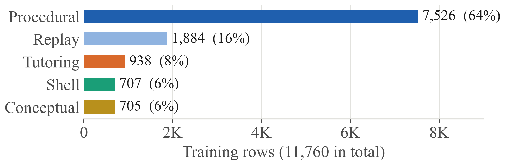
Table 5.3 Training categories and sources
| Category | Rows | Content | Source |
|---|---|---|---|
| Procedural | 7,526 | Worked numericals in 39 question types and 8 families, each decision written as a rule plus its comparison; clarification items where an input is missing | Our own verified simulators |
| Replay | 1,884 | General instructions, the anti-forgetting anchor, chosen by surprise under the base model [12] | Tülu 3 SFT mixture [11], SmolTalk2 |
| Tutoring | 938 | Socratic replies to a student's wrong attempt | MathDial teacher moves [10]; own OS dialogues |
| Shell | 707 | Natural language to bash; every command passes bash -n | tldr, NL2Bash (MIT), InterCode, NL2SH-ALFA |
| Conceptual | 705 | Concept explanations | Self-distilled answers to a 295-question bank, plus hand-written gold |
Plus 240 validation and 600 out-of-distribution rows. Licences: MIT 8,991; ODC-BY-1.0 959; mixed-permissive 925; CC-BY-4.0 885. Three sources were excluded on licence grounds. SHA-256 of the training split: f56a7113…477d.
Simulator-generated problems are used for procedures because they are correct by construction and can be produced in any number. Scraped worked solutions carry their authors' arithmetic slips, and nothing checks them.
ostutor/build.py runs eleven stages. Each writes its statistics to reports/manifest.json, and a cleaning rule is adopted only after the analysis stage has tested it against the data.
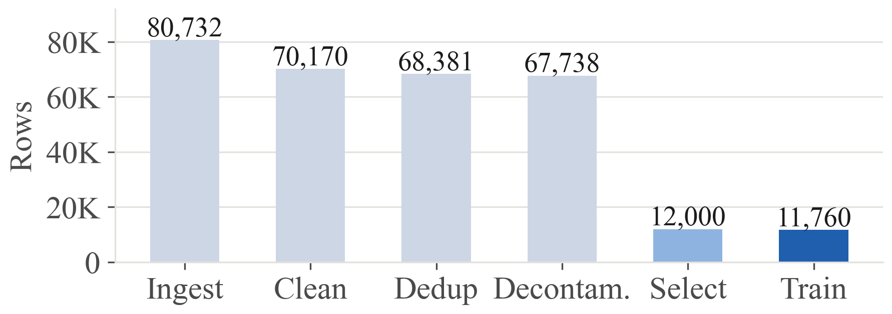
Table 5.4 The eleven stages
| # | Stage | What it does |
|---|---|---|
| 1 | Ingest | 31 source files with line-level provenance on every row → 80,732 rows |
| 2 | Analyse | Tests each candidate cleaning rule against the data before adoption |
| 3 | Clean and scrub | Drops refusals, repetition, bash syntax errors and answer-revealing tutor turns; redacts personal data → 70,170 |
| 4 | Deduplicate | −656 exact (blake2b), −1,133 near-duplicates (MinHash LSH [16], Jaccard 0.80) → 68,381 |
| 5 | Decontaminate | −643 against 4,836 evaluation items: distinctive 13-grams for prose, parameter fingerprints for generated problems → 67,738 |
| 6–7 | Score, select | Quality floor, identity dedup, k-centre diversity, weighted family waterfill → 12,000 |
| 8 | Render | The model's own chat template, one system prompt per mode |
| 9–10 | Split, order, verify | 11,760 train, 240 validation, 600 holdout; at most 4 consecutive rows per category; spaced replay [14]; invariants re-checked |
| 11 | Release gates | 19 gates (no secrets, no non-commercial rows, schema, token p99 ≤ 16,384, mixture drift, diversity and others): 19/19 pass |
The analysis stage corrected two rules. A naive "any shared 13-gram" decontamination removed 58% of procedural rows, because training and evaluation problems share template text, so an evaluation n-gram now counts only if it is rare in training. A tutoring rule requiring at least four messages had silently discarded all 1,508 OS tutoring rows; it was fixed, and a release gate now requires at least 300.
The base model is Qwen3-4B-Instruct-2507 [9] (Apache-2.0), in its non-thinking variant. It shows numbered steps, which students need, rather than hidden reasoning. It fits 16k-token QLoRA training on a T4 and serves at more than 40 tokens per second on an 8 GB card. Training ran on Kaggle's free tier on two Tesla T4 GPUs: 735 optimiser steps in about 3.5 hours.
Table 5.5 Fine-tuning configuration
| Setting | Value | Reason |
|---|---|---|
| Method | QLoRA via Unsloth [22], 4-bit base | Fits 16,384-token sequences in 16 GB |
| LoRA | r = 32, α = 64, all linear layers, dropout 0.05 | Bounded weight drift; LoRA forgets less [6] |
| Schedule | LR 1e-4, cosine, 3% warm-up, one epoch | A second epoch (v2.2) memorised and made the model worse |
| Sequence length | 16,384, no packing | Longest row 11,648 tokens; packing would break the ordering |
| Precision, optimiser | fp16, 8-bit AdamW, NEFTune α = 5 [24] | The T4 has no bf16 |
| Loss, selection | Assistant tokens only; best validation loss | Learn to answer, not to echo |
The model never carries out a procedure. It reads the question into typed JSON, using the untuned base (LoRA scale 0), which reads more reliably: 84% extraction accuracy against 79% for the adapter. Every extracted number must appear in the question. This grounding check once caught an invented Banker's Available vector [10, 5, 7] for a problem that stated [3, 3, 2]. A cylinder range such as "0–299" is read as 300 cylinders (Section 6.9). Grounded parameters go to one of seven simulators: CPU scheduling with seven algorithms, page replacement, disk scheduling, Banker's safety, Banker's request, free-space allocation and address translation. Each writes the full numbered solution, and the simulators are unit-tested against canonical textbook answers. When an input is missing, for example a Round Robin quantum, the gateway asks for it and reads the reply together with the original question.
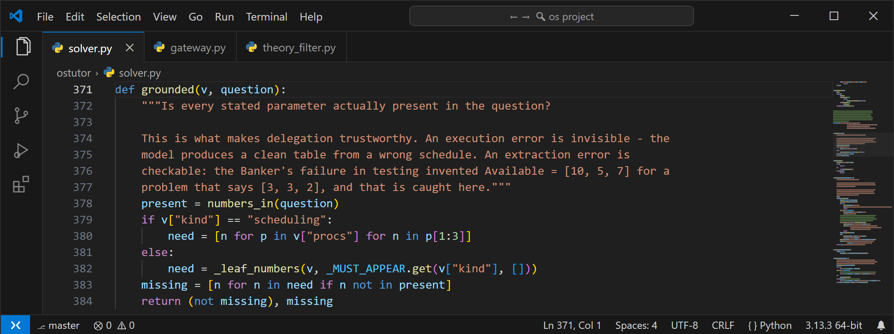
ostutor/solver.py: the grounding check that makes delegation trustworthyTwo corpora were built, and one is selected per deployment. The course corpus holds 105 documents and 2,783 chunks. It combines the faculty's 42 course documents (slides, assigned OSTEP chapters [18], handouts and lab material), Hailperin's Operating Systems and Middleware [19] and 55 Wikipedia articles. The open corpus uses only openly licensed text: from a pool of 3,291 documents, 2,970 documents and 18,515 chunks were kept (Hailperin, Wienand's Computer Science from the Bottom Up [20], 1,054 Wikipedia articles from 24 OS categories, a Wikibook and 1,848 Stack Exchange threads). A manifest records source, licence and SHA-256 for every document, and ingestion refuses the corpus if any entry is missing or changed.
The filters for the open corpus were fixed before any retrieval experiment. A chunk is dropped if:
Table 5.6 Retrieval pipeline
| Step | Choice | Reason |
|---|---|---|
| Extract | Slides as "Slide N: title"; headings kept; running headers removed; Unicode NFKC | Citations must name a findable place |
| Chunk | Split by heading; ≤ 180 words with 30-word overlap; title and heading path kept | One idea per chunk |
| Lexical index | BM25 [15], k₁ = 1.5, b = 0.75 | Exact OS terms matter |
| Dense index | all-MiniLM-L6-v2 [25], local only | Paraphrase; CPU; private |
| Fusion | Reciprocal rank fusion [17], k = 60; top 4 | No score calibration needed |
| Abstain gate | Max cosine or max BM25 above a threshold fitted on the dev half (course corpus: cosine 0.59 or BM25 18.5; open corpus: cosine 0.52 or BM25 24.0) | A least-bad passage would be cited as support |
| Prompt | Trained prompt unchanged, then passages [S1]…[S4], then a rule never to invent a citation | The adapter sees the prompt it learned |
| Follow-ups | A short message that refers back is retrieved with the previous question | "Does LRU suffer from it?" alone retrieves nothing |
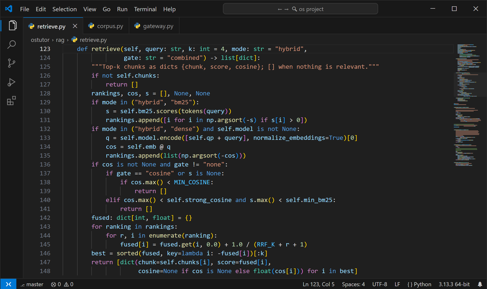
ostutor/rag/retrieve.py: BM25 and dense rankings, the abstain gate and reciprocal rank fusionsort -h) is applied and explained, and risky commands carry a caution.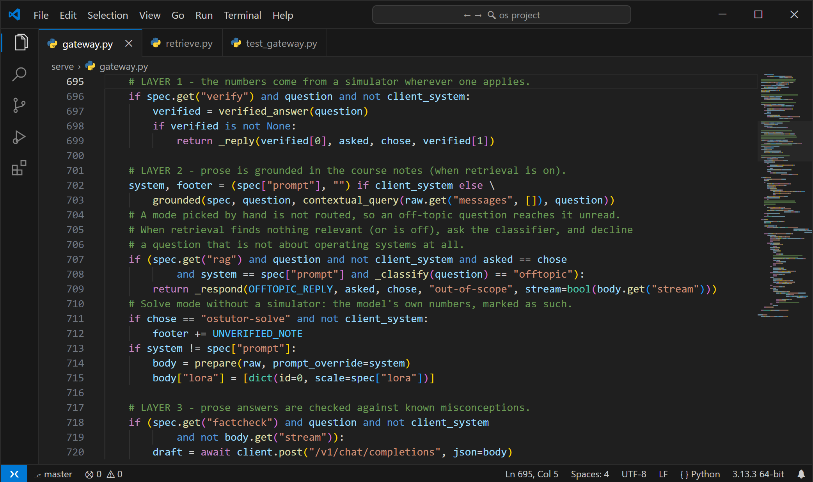
serve/gateway.py: layer 1 is the simulator, layer 2 retrieval, layer 3 the fact checker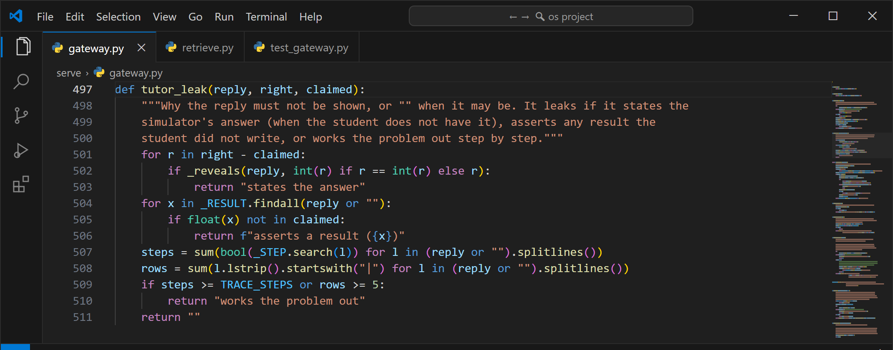
serve/gateway.py: the check every tutor reply passes before it is shownEvery comparison is paired: the same items are scored under two configurations. For a paired yes/no outcome with few discordant items, the right test is the exact two-sided McNemar test [27], and every p-value in Section 6 uses it. Decoding is greedy, and evaluation requests disable the server's prompt cache, which had made greedy decoding non-deterministic. One adapter is loaded per server, enforced by a guard. Each run records commit, model hashes, server arguments and decoding settings.
Table 5.7 Evaluation sets
| Set | Items | Measures | Graded by |
|---|---|---|---|
| Hand-written OS problem suite | 57 | Procedural correctness, 19 kinds | Simulator-exact grader |
| Out-of-distribution holdout | 600 | Unseen problem framings | Simulator-exact |
| General knowledge (MMLU [28]) | 400 | Catastrophic forgetting outside computer science | Log-likelihood of the four options |
| Adjacent computer science (MMLU CS subjects) | 300 | Forgetting or transfer in nearby subjects | Log-likelihood of the four options |
| OS theory MCQ | 70 | Declarative OS knowledge (forgetting test) | Log-likelihood of the four options |
| OS theory MCQ, expanded | 200 | The 70 items plus 130 new ones (retrieval test) | Generated option letter |
| Retrieval questions | 164 | 124 in scope, 40 not covered; dev and test halves | Recall@k, MRR, abstention |
| Short-answer questions | 144 | Factual recall over 12 topics; dev and test halves | Accepted answer present |
| Tutor attempts | 30 | 24 wrong and 6 right attempts over four problem kinds | Rules plus reading by hand |
| Fact-checker probes | 10 | One question per misconception rule | Reading by hand |
All thresholds were fitted on the dev half and reported once on the test half, and every training row was decontaminated against all 4,836 evaluation items that existed when the dataset was built.
Table 5.8 Automated test suites (four run on the CPU alone; the router suite needs the running model server)
| Suite | Checks | Covers |
|---|---|---|
tools/test_pipeline.py | 124 | Simulators against textbook answers; cleaning, deduplication, decontamination, gates |
serve/test_gateway.py | 76 | Routing, layers, missing inputs, history scrub, tutor check, command check, scope, fact checker |
tools/test_rag.py | 69 | Manifest refusal, extraction, chunking, retrieval, gate, citations, follow-ups |
tools/test_g0.py | 58 | Statistics, extraction scoring, disk range reading, grader regressions, adapter guard |
tools/test_router.py | 28 | Labelled routing cases; 0 misroutes of attempts allowed |
| Total | 355 | All passing |
The released dataset files are stored with their SHA-256 hashes, and the dataset-building code path is unchanged by the final fixes: the fact checker's original reading is kept for the build, and the old and new code give identical results on all 19,911 texts compared. A decision log (docs/DECISIONS.md) records each significant decision with its alternatives and evidence, and every number in this report names the result file it comes from.
The adapter learned each behaviour under one exact system prompt, kept in ostutor/config.py. The gateway sends these prompts word for word, because a reworded prompt is one the adapter never saw. Rules a small model might ignore are enforced by the gateway in code.
Table 6.1 Trained system prompts (verbatim)
| Mode | System prompt |
|---|---|
| Solve | You are an Operating Systems tutor. Solve the problem with numbered, auditable steps. Show every intermediate state. State the final answer last. If the question does not state an input the answer depends on, do not assume a value: say which input is missing and ask for it instead. |
| Explain | You are an Operating Systems tutor. Explain the concept clearly and precisely, using a concrete example. |
| Tutor | You are an Operating Systems tutor. Guide the student with hints and questions rather than solutions. When the student shows an attempt, diagnose the misconception behind it and ask a question that leads them to the error. Never state the correct final answer - the student must reach it. |
| Analyze | You are a senior Operating Systems engineer teaching a student to reason about system behaviour. Work in this order: (1) state what the question gives you and any assumption you must make; (2) identify the mechanisms involved and what each one costs; (3) weigh the trade-offs, quantifying with a concrete calculation wherever the numbers allow; (4) give a clear recommendation or conclusion, and say what evidence would change it. Be precise about what is certain and what depends on the workload. If an input the analysis depends on is missing, say which and ask for it. |
| Shell | You are a Linux systems instructor. Give the correct shell command and explain each flag. |
Three gateway prompts surround these. The extraction prompt asks the untuned base for "ONLY a JSON object of its parameters" in one of seven typed schemas (for example {"kind":"paging","policy":"FIFO|LRU|OPT|CLOCK","frames":<int>,"refs":[…]}), or a label such as concept, analysis, shell or offtopic. The retrieval prompt appends the passages as [S1]…[S4] with the rule "Where your answer relies on these reference passages, cite them as [S1], [S2] and so on. … Never invent a citation." For a wrong attempt, the rule appended after the tutor prompt reads: "Before you reply: The student's final answer has been checked and is incorrect. Do not tell them the correct value. Name the idea behind their first mistake and ask one question that leads them to it. Do not solve the problem for them: write no step-by-step trace, schedule or table, and state no final answer or total. Keep it short and end with one question." A verified correct attempt is confirmed by the gateway itself, without a model call.
The examples below are unedited replies from the running system (open corpus, greedy decoding), recorded through its API on 24 October 2026. Where a long reply is shortened, the omission is marked "[…]". The italic line at the end of each reply is the route the gateway recorded.
@@CHAT:auto_rr|Auto mode routed to Solve: Round Robin with arrivals|10|14@@The router sent the problem to Solve, and the scheduling simulator produced every step, including the queue rule that the model alone got wrong. The average waiting time of 4.5 is exact.
@@CHAT:solve_missing|Solve mode: the same problem without a time quantum|0|0@@The gateway asked for the missing quantum instead of letting the model assume one. When the student replied "The time quantum is 2.", the reply was read with the original question and the verified solution of Figure 6.1 followed.
@@CHAT:explain_followup|Explain mode: a follow-up question, answered with cited sources|0|0@@The follow-up names no topic, and on its own it retrieves nothing from either corpus. Retrieved together with the previous question, it gives a correct, cited answer: LRU is a stack algorithm and is immune to Belady's anomaly. Each cited statement appears in its passage: [S2] is Hailperin's section on replacement policy, which states that "both OPT and LRU are immune from Belady's anomaly, as are all other members of the class of stack algorithms".
@@CHAT:auto_banker|Auto mode routed to Solve: Banker's safety algorithm|8|9@@ @@CHAT:auto_tutor_fcfs|Auto mode routed to Tutor: a student shows a wrong attempt|0|0@@The router recognised the attempt, and the private simulator run judged it wrong (the correct average is 4.0). The reply points the student to the step to recheck without revealing the value. Section 6.9.1 shows a reply of the kind this check now stops.
@@CHAT:shell|Shell mode: a command checked before it is shown|0|0@@ @@CHAT:disk_range|Solve mode: a disk stated as a cylinder range|6|9@@ @@CHAT:auto_offtopic|Auto mode: an off-topic question|0|0@@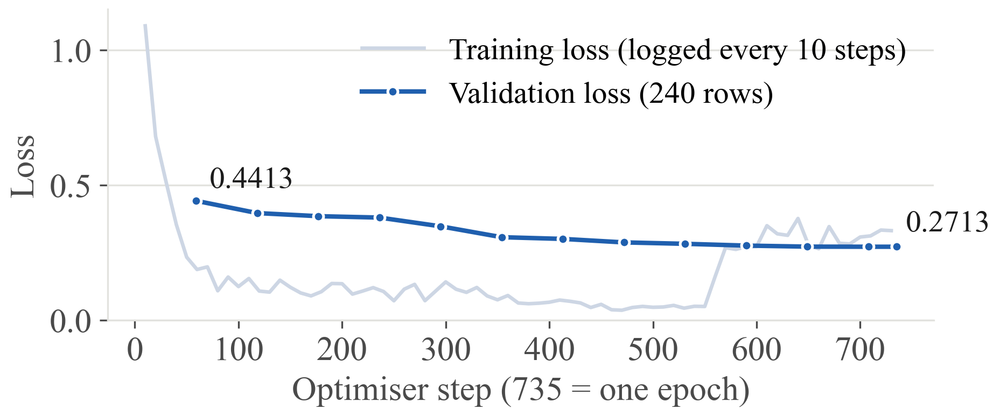
Validation loss fell at each of the 12 periodic evaluations, from 0.4413 at step 59 to 0.2713 at step 708, and the end-of-epoch evaluation at step 735 confirmed 0.2713, so training was healthy. The training-loss curve rises late in the epoch because the engineered ordering changes the batch mix, and validation kept falling throughout. A low teacher-forced loss does not show that a model can solve problems: the out-of-distribution loss reached 0.0139, yet the adapter alone solves 34 of 57 suite problems. Loss is therefore reported only as a training-health signal, and capability is measured separately below.
All six configurations were measured on the served path (llama.cpp, one adapter per server, greedy decoding) over the 57-item suite.
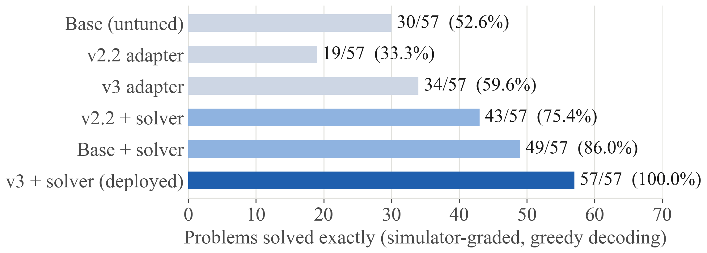
Table 6.2 Paired significance of each component (exact McNemar test)
| What is tested | A → B | Right → wrong | Wrong → right | p |
|---|---|---|---|---|
| Solver, on v3 | 34 → 57 | 0 | 23 | < 10⁻⁶ |
| Solver, on the base | 30 → 49 | 0 | 19 | 4 × 10⁻⁶ |
| Adapter, with the solver | 49 → 57 | 0 | 8 | 0.0078 |
| Adapter, without the solver | 30 → 34 | 11 | 15 | 0.557 |
| v2.2 → v3, no solver | 19 → 34 | 2 | 17 | 0.0007 |
Source: reports/g0/20261012-1429/regraded.md.
The solver is the main lever: it adds 19 to 23 problems with zero losses. The fine-tuned adapter contributes the 8 problems the solver declines, also with no losses (p = 0.0078). Without the solver, the adapter's +4 cannot be told apart from noise, which is why the system is built as a tool-using tutor rather than as a bigger fine-tune. v3 also corrected v2.2, an earlier adapter whose second epoch made it significantly worse than the base.
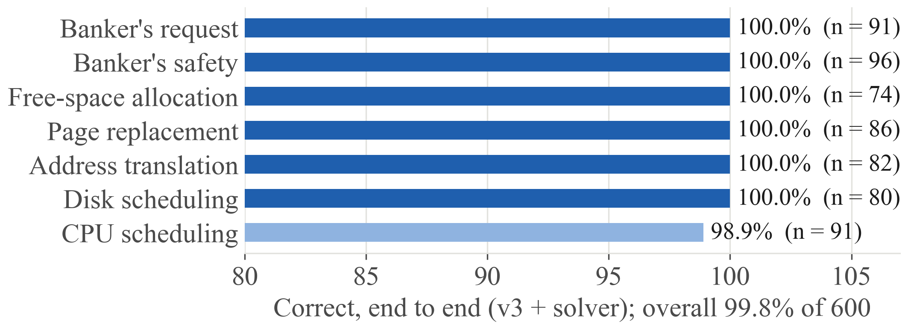
The system answers 599 of the 600 holdout problems correctly (99.8%). It extracts the parameters exactly for 594 (99.0%) and delegates 99.2% of the problems to a simulator. Six of the seven kinds are perfect, including all 80 disk problems after the range fix of Section 6.9.2 (74 before). The one remaining error is a scheduling problem that the extractor did not delegate, so the model answered it.
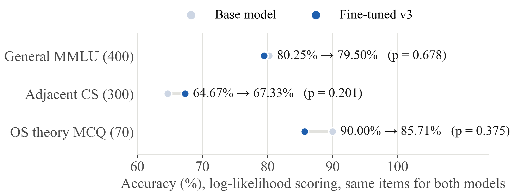
No effect is statistically detectable in either direction. General knowledge is retained (80.25% → 79.50%, 13 items lost and 10 gained, p = 0.68). The adjacent-CS gain (+2.66 pp) and the OS-theory change (−4.29 pp, which hinges on 5 discordant questions) are both within noise. On the larger 200-item theory set the fine-tuned model matches the base (186 against 185, Figure 6.16). Objective O2 is met.
Table 6.3 Retrieval on the course corpus (124 in-scope questions; a hit is the labelled passage)
| Retriever | Recall@1 | Recall@5 | Doc. recall@5 | MRR@10 | p95 latency |
|---|---|---|---|---|---|
| BM25 only | 46.8% | 75.8% | 88.7% | 0.586 | 0.72 ms |
| Dense only (MiniLM) | 46.0% | 75.0% | 84.7% | 0.585 | 8.17 ms |
| Hybrid, RRF (served) | 46.0% | 79.0% | 87.9% | 0.615 | 9.21 ms |
Source: reports/rag/corpus_eval.md. A larger embedder (multilingual-e5-base) reached 81.5% recall@5, not significantly better (p = 0.65), at three times the latency.
Hybrid retrieval gives the best recall@5 and MRR at 9.21 ms (95th percentile), far inside the 500 ms budget. On the larger open corpus the 95th percentile is 21.2 ms (reports/final_review/open_latency.json, 308 queries, three passes). The gate gave notes to 59 of 62 in-scope test questions and withheld them from 18 of 20 off-topic ones. The two corpora share no labelled passages, so they were compared by answer recall: whether a retrieved passage contains an accepted answer to one of the 144 short-answer questions (Figure 6.13).
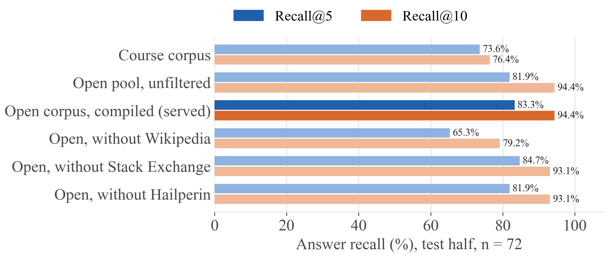
The open corpus retrieves an answer for 83.3% of the test questions, against 73.6% for the course corpus. Over all 144 questions the difference is significant (83.3% against 74.3%, p = 0.024), and at recall@10 the gap widens to 94.4% against 76.4%. Removing Wikipedia costs 18 points (p = 0.002), and the quality filters cost nothing: the unfiltered pool, 17% larger, scores within one question.
A cross-encoder re-ranker (mxbai-rerank-xsmall-v1 [29], int8 on the CPU) was evaluated on the same test half. It raised answer recall@1 from 52.8% to 72.2% and recall@4 from 81.9% to 87.5%, above the 85% target, at a 95th-percentile cost of 310 ms (Figure 6.14). Correct answers stayed level (62 against 61 of 72, p = 1.0), so the served configuration keeps the faster hybrid retriever, and the re-ranker is available where retrieval quality itself is the goal.
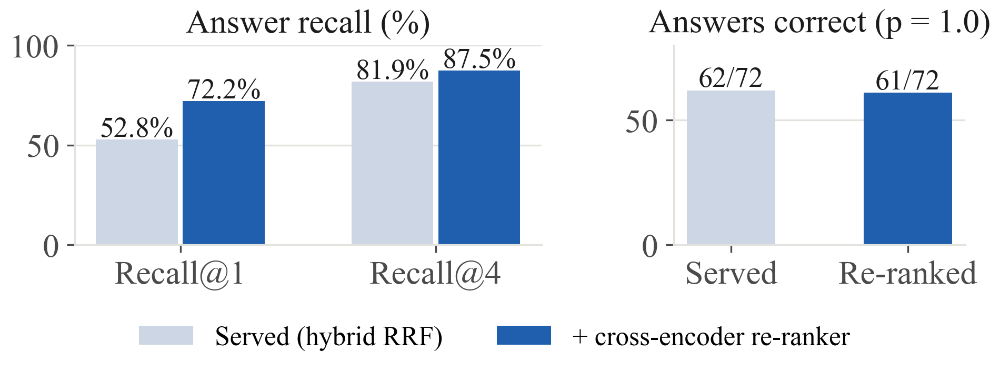
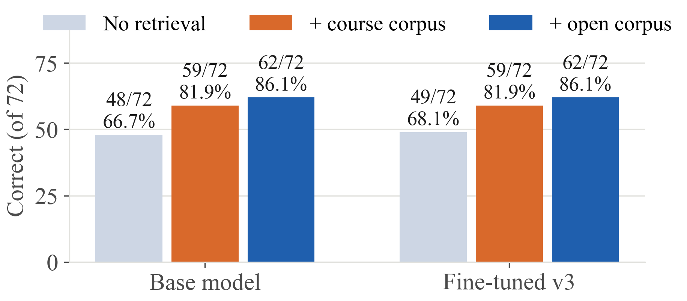
Table 6.4 Effect of retrieval on the fine-tuned model's short answers (exact McNemar)
| Comparison (v3) | Right → wrong | Wrong → right | p |
|---|---|---|---|
| No retrieval → open corpus, test half (68.1% → 86.1%) | 4 | 17 | 0.0072 |
| No retrieval → open corpus, all 144 (70.8% → 85.4%) | 9 | 30 | 0.0011 |
| No retrieval → course corpus, test half (68.1% → 81.9%) | 4 | 14 | 0.0309 |
| Course corpus → open corpus, all 144 | 11 | 10 | 1.000 |
Source: reports/rag/short_e2e-short-course_vs_e2e-20261013-1339.md.
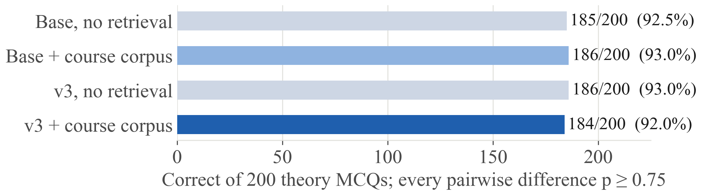
Table 6.5 Grounding and speed of explain answers
| Measure | Course corpus | Open corpus |
|---|---|---|
| Answers citing at least one passage, when given passages | 50/59 | 69/72 |
| Invented citations | 0 | 0 |
| Cited sentences supported, base-model judge | 117/143 (81.8%) | 110/138 (79.7%) |
| Cited claims fully supported, strict manual check of 40 | 24/40 (60%) | 25/38 (66%) |
| Decode speed, median (target ≥ 20 tok/s) | 42.9 tok/s | 42.0 tok/s |
| Decode speed, slowest answer | 41.6 tok/s | 39.2 tok/s |
Retrieval gives a clear, significant gain on recall questions: +18 points on the test half with the open corpus, where the model must produce a term rather than recognise it among options. On the MCQ every configuration lies between 92.0% and 93.0%, so there is little left for passages to fix. The two corpora give the same answer accuracy (123 and 124 of 144). The open corpus covers more ground and can be shared freely, while the course corpus cites the course's own slides. No answer cited a passage that does not exist. On a strict reading, 60–66% of cited claims are supported in full, the rest mostly add the model's own elaboration, or an example the passage does not contain, to a correctly cited passage.
End-to-end testing of the deployed system, through the chat interface and the evaluation sets above, found five faults. Each was diagnosed to its root cause, fixed in code and covered by automated tests. The tutor, disk and off-topic fixes were re-measured on the live model; the fact checker was re-scored on the saved probe answers, and the shell fix was checked on the recorded command. Table 6.6 summarises them, and the subsections give the evidence.
Table 6.6 Faults found in testing: cause, fix and measured result
| Fault | Root cause | Fix | Before → after |
|---|---|---|---|
| Tutor revealed a (wrong) count | Tutor mode was isolated from the solver, so nothing checked its reply | Private simulator check; reply rules; redraft; safe hint | Replies that keep the answer back 15/30 → 30/30; correct students confirmed 0/6 → 6/6 |
| Disk size misread | "0–299" read as 299 cylinders; the grounding check passes it because 299 is in the text | Range read in normalise(): size = top + 1 | Disk items 74/80 → 80/80; extraction 71/80 → 80/80; none lost |
| Fact-checker false alarms and a miss | Negation was searched sentence-wide; question headings were read as claims | Negation scoped to the claim; questions skipped; hedges after the claim respected | Precision 1/3 → 2/2; recall 1/2 → 2/2 (10 probes); 70 broad answers: 0 flags |
| Shell command sorted sizes as text | Commands were model-generated and unchecked | Command checker with mechanical fixes and cautions | Recorded command corrected to sort -k 5 -rh |
| Off-topic question answered | The classifier's off-topic verdict only added a note | Off-topic questions declined without a model call | Everyday questions declined 0/20 → 17/20; OS questions answered 267/268 |
During testing, a student's FIFO attempt of 13 page faults was routed correctly to tutor mode. The model diagnosed the right misconception, but it then walked through the trace itself, ignored the three-frame limit and stated "So total page faults = 7"; the simulator gives 10. Figure 6.17 shows that original reply. The fix runs the simulator privately on the student's problem. The model is told only whether the attempt is right, and the reply is checked before it is shown. A reply that states the answer, asserts any result the student did not write, or contains a step-by-step trace is redrafted once, and otherwise replaced by a fixed hint for that problem kind. The check was measured on 30 attempts, 24 wrong and 6 right, with the old and new paths answering the same items (Table 6.7).
@@CHAT:tutor_before|Tutor reply before the fix (the reply the check now stops)|8|22|6.17@@Table 6.7 Tutor replies before and after the check (30 attempts; source: reports/final_review/tutor.json)
| Reply property | Before | After |
|---|---|---|
| Withholds the simulator's answer (24 wrong attempts) | 19/24 | 24/24 |
| States no result of its own | 24/30 | 30/30 |
| Leaves the working to the student (no step-by-step trace) | 21/30 | 30/30 |
| Keeps the answer back on all three counts | 15/30 | 30/30 |
| Does not agree with a wrong attempt | 24/24 | 24/24 |
| Confirms a correct attempt | 0/6 | 6/6 |
| Asks the student a question | 30/30 | 30/30 |
After the check, all 30 replies keep the answer back: none states the answer, asserts a result or works the problem out. 21 drafts passed as written, 3 were redrafted once, and the fixed hint was never needed. The six correct students are now told so by the gateway, with a question about their method; before, the model confirmed none of them. The private simulator judged 28 of the 30 attempts, and for the other two, where the solver could not read the problem, it returned "unknown" rather than a wrong verdict; those two replies were still checked and kept the answer back. The median reply took 11.3 s, including the private simulator run. We also read the 24 model-written hints by hand. Nineteen are accurate. Two contain a factual error: one says Round Robin generally gives lower waiting times than other policies, and one lists a SCAN service order wrongly. Two call a wrong answer "plausible", and one describes the SCAN return trip loosely. The check guarantees that no hint gives the answer away; the wording of the hint itself still comes from the model (Section 8).
In the holdout, six disk answers were wrong because a range such as "device spans 0–299" was extracted as a disk size of 299 rather than 300 cylinders, which changes the SCAN and C-SCAN head movement. The grounding check passes such a value, since 299 appears in the question. normalise() now detects a 0-based cylinder range and sets the size to its top plus one when the extractor returned the top. Re-run on the live model, the 80 disk items of the holdout went from 74 to 80 correct and from 71 to 80 exactly extracted, with no item lost (reports/final_review/disk.json). Figure 6.7 shows a range-stated problem answered by the simulator, and three new tests cover the range, a size already read correctly, and a stated size with no range.
The saved v3 answers to the ten probes were re-scored with the corrected checker. The two false alarms were question headings ("### Does a Cycle Always Indicate Deadlock?"), which are no longer read as claims. The miss, "Segmentation suffers from internal fragmentation but not external fragmentation", was hidden by the "not" of the second clause; negation now counts only within 30 characters before the claim. The checker now flags both answers that state a misconception and none of the eight that do not, and it still flags none of 70 broader theory answers. Four new tests cover the cases.
The recorded command find … -exec ls -lh {} \; | sort -k 5 -r sorted human-readable sizes as text, so 9.5M would sort above 12M. The command checker corrects such a sort to sort -k 5 -rh and explains the change (Figure 6.6). It also quotes unquoted find -name patterns, and it adds a caution to recursive deletes from the root or home directory and to chmod 777. An off-topic question (Figure 6.8) is now declined without calling the model. On the live classifier, 17 of 20 everyday questions are declined. The other three (vaccines, photosynthesis and the offside rule) are answered with the notice that the reference corpus does not cover them. Of 268 OS questions (124 retrieval and 144 short-answer), one is declined, a computing-history question: "Which company's research lab first invented the desktop GUI?" (reports/final_review/offtopic.json).
Table 6.8 Objectives: targets and measured results
| # | Measure | Target | Measured | Status |
|---|---|---|---|---|
| O1 | Dataset release gates | all pass | 19/19 | Met |
| O2 | Forgetting on general MMLU | not significant | −0.75 pp, p = 0.68 | Met |
| O3 | Problem suite, full system | 57/57 | 57/57 | Met |
| O3 | OOD holdout, 600 items | — | 99.8% | Reported |
| O4 | Missing input asked for, never assumed | always | tested and shown live | Met |
| O5 | Recall@5 (open corpus, answer recall) | ≥ 85% | 83.3% served; 87.5% re-ranked | Met with re-ranker; served retriever kept for speed (Section 6.7) |
| O5 | Off-topic questions withheld or declined | ≥ 90% | course 18/20 (90%); open 14/20 (70%) | Met on the course corpus; on the open corpus the six that pass are adjacent CS topics, answered with cited sources |
| O5 | Answers citing a passage (open corpus) | ≥ 90% | 95.8% | Met |
| O5 | Invented citations | 0 | 0 | Met |
| O6 | Short answers, v3 with vs without retrieval | better | 86.1% vs 68.1%, p = 0.007 | Met |
| O6 | Theory MCQ (200), v3 with open retrieval vs base | not worse | 93.0% vs 92.5%, p = 1.0 | Met |
| O7 | Routing cases correct; replies keeping the answer back | all; all | 28/28; 30/30 | Met |
| O8 | Retrieval p95; decode speed | ≤ 500 ms; ≥ 20 tok/s | 9.2–21.2 ms; 39.2–42.9 | Met |
Each layer guards a different failure and is measured on its own. The simulator guards procedures (+23 problems, no losses). Retrieval guards factual recall (+18 points) and makes answers traceable. The fact checker guards known misconceptions, and the tutor check keeps answers away from a student who is still working. The measurements also show where the gains come from. Fine-tuning contributes the 8 problems beyond the solver and the trained teaching formats. The large gains come from architecture (delegation, grounding and checking) and from auditing the evaluation itself.
This project set out to build an Operating Systems tutor whose numbers are always right, whose explanations can be checked and whose teaching does not give the answer away, on hardware a student or department already owns. The result is a complete, working system, and each of its central claims is backed by a paired, significance-tested measurement.
The decisive gains came from architecture and measurement rather than from more data or a bigger model: delegating computation, grounding claims, checking replies before they are shown, and auditing the evaluation itself.
Source code. The complete source, dataset build, evaluation harness and the scripts that produce this report's figures are available at https://github.com/Divyakush2006/OS-Tutor.
Table 7.1 Reproducing the results from the repository
| Command | Purpose |
|---|---|
python -m ostutor.build | Build the dataset (11 stages, 19 release gates) |
tools/test_pipeline.py, test_rag.py, test_g0.py, test_router.py; serve/test_gateway.py | Run the 355 automated checks (the router suite needs the model server) |
python tools/g0_ablation.py | Problem suite, OOD holdout, fact checker (GPU) |
python tools/rag_eval.py data/rag/corpus --calibrate | Retrieval quality and gate |
python tools/rag_e2e.py data/rag/open | End-to-end retrieval evaluation (GPU) |
python tools/final_review_eval.py | Before/after measurements of the testing fixes (GPU) |
powershell -File serve\start_tutor.ps1 | Serve the tutor (with OSTUTOR_RAG=data/rag/open) |
The following boundaries of the work apply to the results in Section 6.
The system is complete for its stated scope. The following extensions would widen that scope, and each can be evaluated with the same paired-test method.
Table 9.1 Extensions
| Extension | Description | How it would be measured |
|---|---|---|
| Question generation | Labs, MCQs and viva questions generated from the corpus, with numerical items verified by the simulators (the remaining items of the course brief) | Instructor-rated quality; simulator agreement |
| Adaptive difficulty | A per-student record of attempts used to choose the next problem's difficulty | Mastery curves per student |
| Formula calculators | Calculators for the formula kinds, alongside the seven simulators | Formula items exact |
| Classroom deployment | A pilot with pre-test, post-test and a control group, with analytics kept on the local machine | Learning gain, significance-tested |
| Department-scale serving | Merged LoRA, speculative decoding with a small draft model, several server slots | p95 time to first token at 1–8 users |
| Instructor-reviewed evaluation | Past examination questions (with permission) and an instructor's review of citations | ≥ 300 external items |
| Newer base models | Newer 4–12B instruct models probed zero-shot on the same suites | Paired gains on the same benchmarks |